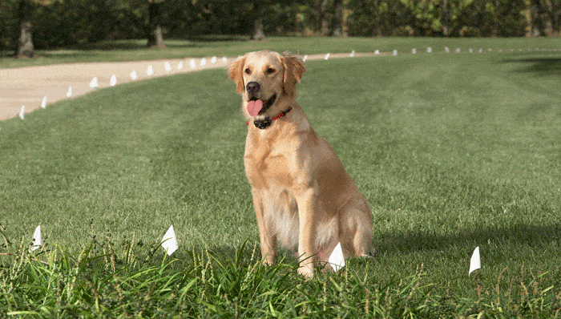

Safe and Effective Containment Fence Systems
Electric dog fences deliver a radio signal to your dog's collar, giving them a gentle static pulse that reminds them to stay within specific boundaries. Benefits of containment fence systems include:
- Peace of mind. Know your dog is safe in your own yard.
- Never pick your dog up from the pound, pay expensive vet bills or council fees.
- No compulsory set up - you can set up the boundary the way you want!
30-day Performance Guarantee - Buy it, Try it. If it doesn't work, send it back!

Which Containmant Fence is right for me?
The correct fence for your dog depends on a number of factors, including:
- The size of the desired boundary
- Your current physical fencing
- Your dog's breed, age, size and temperament
Containment fence systems have the ability to surround small areas, such as garden beds and chook pens, up to large 100 acre properties.
An unlimited amount of dogs can be contained by the boundary system providing they are wearing the compatible receiver collar. Suitable for dogs over 2kg and 6 months.